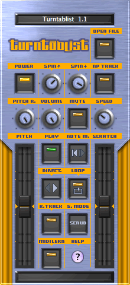
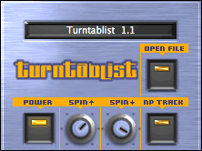
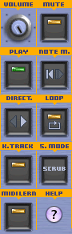
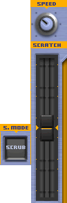

Thanks to:
|
bioroid media development (R.I.P.) Alterex
|
|  |
Welcome to Turntablist 1.1 Turntablist is an Audio Unit instrument that can load an audio sample and perform turntable style effects on it. You can scratch, change pitch, and even spin the audio up and down just like on a real turntable.
Coding by: Martin Robaszewski Graphics by: Alterex Audio Unit and 1.1+ updates by: Sophia Poirier |
Power controls
|  |
|
Play controls
|  |
|
Pitch and Scratch controls
|
 |
Using Turntablist
|
Getting results: Load the plugin in an Audio Unit host and open an audio file. Scratching: Use the mouse to quickly move the Scratch Amount slider back and forth while the sample is playing. You can also turn the Power button off, and turn Play on and scratch without the sample having to play on its own. You can also use the pitch bend on your midi controller. Scratch mode 1 (off) is scrub, while scratch mode 2 (on) is the "spin" mode. Spin down effect: Turn NPTrack off, Power on and put Spin Down to around 50%. While Play button is on, turn the Power off. Power effects: Set the Spin Up and Spin Down speed knobs to diff values. Turn NPTrack on and turn Power on. Hit the Play button on and off and notice the sampling spinning up, playing and spinning down. This is a nice effect to use on beat loops. |
|
A note about performance: The scrub scratch mode will vary in response depending on your host. Some hosts send event updates to the plugin at a faster rate than others. Also the scratching is speed based (not position based) and will lose tracking after a while. How quickly it loses tracking depends on the host. |
About this release
For more information, please visit the Destroy FX web site. Please use the contact form to report any bugs.
Version history:
1.1.0 - June 18-22, 2004
1.0.4 - March 1, 2004
1.0.3 - February 14, 2004
1.0.3 September 29, 2003
1.0.2 - September 19, 2003
1.0.1 - April 10, 2003
Thanks to:
|
bioroid media development (R.I.P.) Alterex
|